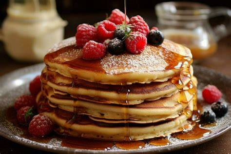

Pancakes recipe

Description:
Homemade pancakes shouldn’t be complicated. It doesn’t matter if they come out wonky or with a splotchy surface instead of being a beautiful, even golden brown – after all, they’ll get smothered in toppings.
Ingredients
- 2 cups plain / all purpose flour (Note 1)
- 4 tsp baking powder NOT baking soda / bi-carb (Note 1)
- 1/4 cup white sugar (caster / super fine is best but not essential)
- Pinch of salt
- 1 large egg (~50g / 2oz in shell)
- 1 3/4 cups cups milk (any type, any fat %)
- 1 tsp vanilla extract or essence/li>
- 4 tsp butter , for cooking/li>
Steps
- Whisk dry – Place flour, baking powder, sugar and salt in a bowl, whisk to combine.
- Add wet ingredients – Add egg, milk and vanilla. Whisk until lump free – no longer than 30 seconds.
- Melt then wipe off most butter – Heat a non-stick pan – use medium heat if you have a strong stove, medium
high if you have a weak one. Add a tiny bit of butter (about 1/2 tsp) and swirl to melt.
Use paper towel to mostly wipe the butter off (this is the trick to avoid a dodgy 1st pancake).
- Melt then wipe off most butter – Heat a non-stick pan – use medium heat if you have a strong stove, medium high if you have a weak one. Add a tiny bit of butter (about 1/2 tsp) and swirl to melt. Use paper towel to mostly
wipe the butter off (this is the trick to avoid a dodgy 1st pancake).
- Cook – Swirl pan lightly to spread or use the ice cream scoop edge to spread
into 11cm / 4.5" circle (ruler is a must) (joking!). When bubbles rise to the surface (see video), flip and cook the other side until golden.
- Keep warm and repeat – Remove the pancake and keep warm in a low oven.
Use more butter every 2 to 3 pancakes – depends how good your non stick coating is.
- Serve with toppings of choice!
Home